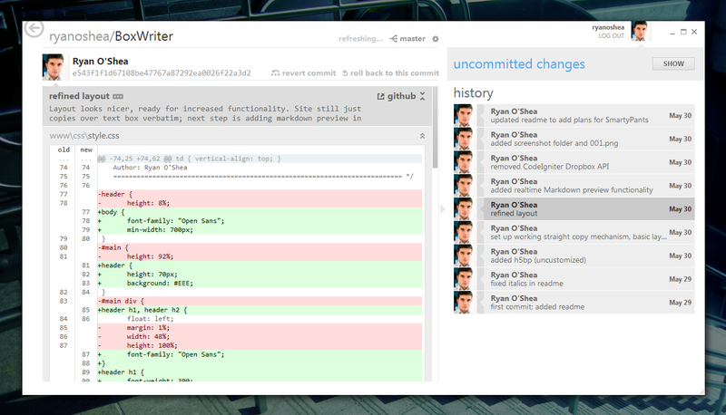

Github
Github is site that allows the users to store and organise their projects. There's also a downloadable software to make project gestion a lot easier and faster.
Github Application
So this site is great for project managing, There's a "fork" system that allows each members to work on their own part and reassemble everything at the end . It let every members of the project see each other's progress with having to contact them.
Advantages & Flaws
Advantages
Here are a few advantages of Github :
- Easy project management thanks to the fork system.
- Great visibility on other's changes and addings.
- Fast site.
- Has its own software to make the work even easier.
Flaws
There's still some flaws :
- Pretty hard to master every functionality.
- Without the software, uploading file on the site is complex.
- The content is public if you are a free member.
- Lots of steps to upload et file.
Exemples
Here's some exemple of Github use :
First there is the main fork management

Also the changes of the other developpers.
Finally here's some codes needed to know how to use Github.
- git clone "chemin absolu" => see all the project's files
- git add * => upload new files
- git commit -m "leMessage" => Announce the changes applied to the project
- git push => uploads everything to the site's data base